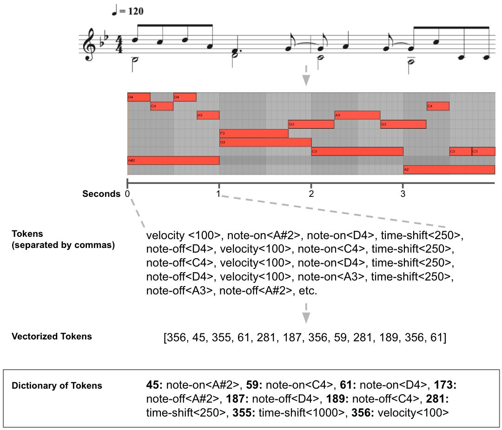
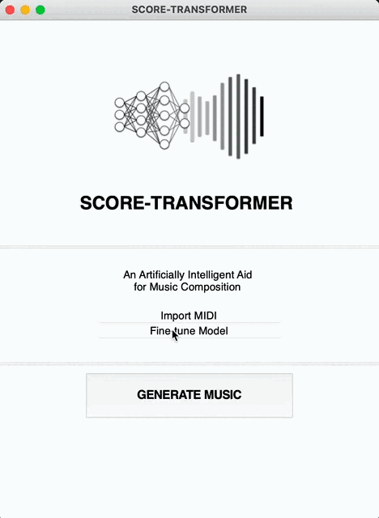
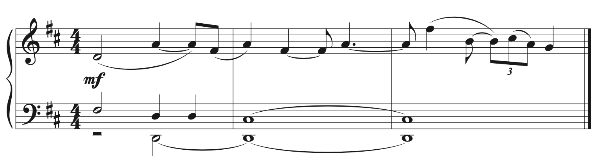
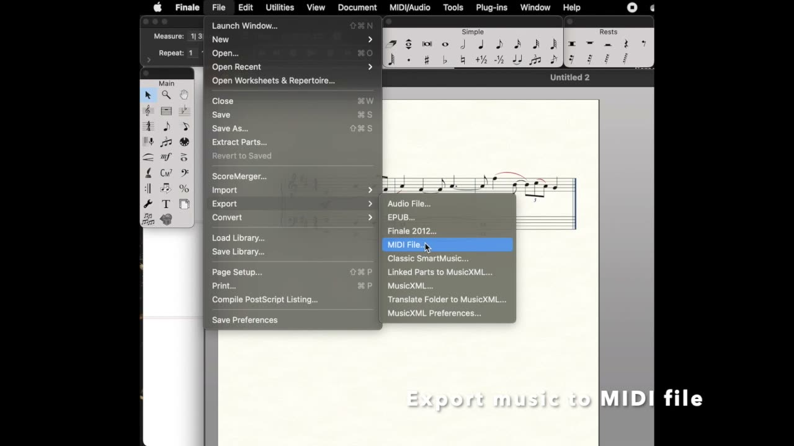

Score-Transformer: A Deep Learning Aid for Music Composition
Abstract
Creating an artificially intelligent (AI) aid for music composers requires a practical and modular approach, one that allows the composer to manipulate the technology when needed in the search for new sounds. Many existing approaches fail to capture the interest of composers as they are limited beyond their demonstrative purposes, allow for only minimal interaction from the composer or require GPU access to generate samples quickly. This paper introduces Score-Transformer (ST), a practical integration of deep learning technology to aid in the creation of new music which works seamlessly alongside any popular software notation (Finale, Sibelius, etc.). Score-Transformer is built upon a variant of the powerful transformer model, currently used in state-of-the-art natural language models. Owing to hierarchical and sequential similarities between music and language, the transformer model can learn to write polyphonic MIDI music based on any styles, genres, or composers it is trained upon. This paper briefly outlines how the model learns and later notates music based upon any prompt given to it from the user. Furthermore, ST can be updated at any time on additional MIDI recordings minimizing the risk of the software becoming outdated or impractical for continued use.
Author Keywords
Artificial Intelligence, Deep Learning, Transformer Model, Music Composition, Notation Software, Natural Language Processing
CCS Concepts
•Applied computing → Sound and music computing; •Computing methodologies → Artificial intelligence → Natural language processing → Information Extraction;
Introduction
Machine learning models trained to write MIDI music autonomously have slowly been generating more coherent and human-like examples as these models become more adept at determining and exploiting hierarchical and sequential patterns found in music. Models developed for natural language tasks have shown excellent promise when utilized in a musical domain as both music and language contain linear sequences of classes of elements that draw some of their meaning from the relationships those elements have with one another. Recent research applying the transformer model, a deep learning model-type which exceeds at parsing syntax, language translation, and document generation [1], to musical tasks has shown increased ability compared to previous model-types in autonomous MIDI music generation [2][3] owing to the attention mechanism [1]. The attention mechanism allows the model, during output generation, to “pay attention” to what comes before it in a sequence, giving context to its predicted next output in the sequence [4]. As artificial creative ability is a subjective concept, here it will be defined as a model’s understanding and reproduction of the elements in polyphonic music generation including more complex elements such as recurring motifs, phrases, and overlying musical structures.
While recent work demonstrates the application of different variants of the transformer model to music [2][3], those models, nonetheless, have limited practical abilities beyond their demonstrative purposes and can often be too computationally intensive for common use on basic computers without GPU accessibility. For these reasons, this technology often fails to capture the interest of music composers. This paper introduces Score-Transformer (ST), a modular and practical approach in applying a new variant of the transformer model to software in which a composer can work in tandem with an artificially intelligent assistant to create new ideas, reference past stylistic conventions, or at times break writer’s block. ST was trained from scratch but can be distributed as a pre-trained model allowing the user to begin creating quickly without any time-consuming training required.
Model
Training a model to learn to write and score compelling MIDI music in any of the popular notation software (Finale, Sibelius, etc.) involves the following processes.
Data Preprocessing
Training & Fine-tuning
Sampling
Data Preprocessing
ST was trained from scratch upon a dataset of ~180,000 MIDI recordings of music (using the MAESTRO dataset [5], the Lakh dataset[6], and other free MIDI recordings from imslp.com). With an established dataset in place, an encoding process modeled after work by Oore et al.[7] provided a method whereby four MIDI musical events were categorized and stored in a dictionary set. This elegant solution consists of 256 note events (note-on and note-off), a single velocity value, and 100 distances in time (10 ms each) between these events referred to as “time-shifts” by Oore et al. [7]. A MIDI recording is thus converted into two basic musical elements, pitch, and duration. As the goal is to notate the generated sample output from the model, this simplistic rendering of music is all that is required. While more musical elements could theoretically be retained, ST is not meant to fully replace the human composer in all aspects of music creation but rather to aid them in creation, not unlike precedents set forth by Schoenberg’s twelve-tone matrix or Xenakis’ stochastic music processes.


Encoding process where tokens related to musical elements of the MIDI recording are vectorized.
Training & Fine-tuning
ST’s architecture differs from past research [2][3] involving transformer models in a musical domain through its design and size. ST’s architecture design is based upon a transformer-decoder model similar to that used in the current state-of-the-art “GPT-3” natural language model by OpenAI [8]. The transformer-decoder model relies on masked self-attention mechanisms to make its predictions based upon observations of past tokens in a sequence [1]. To maximize the learning based on preceding frames, ST applies relative positional representations (RPRs) [2][9] which embeds the positions of nearby tokens in a sequence in order to capture recurring stylistic musical gestures. The model plateaued at a loss of ~1.7 during training after approximately 250,000 steps.
ST is built to learn in two stages, the initial training stage, where the model learns music writing from the dataset, and the fine-tuning stage, where the model can learn new tasks that differ from the original probability distribution from initial training. The value of fine-tuning has been demonstrated in natural language tasks where the pre-trained model struggled with specialized tasks but showed improvements when fine-tuned on new datasets [10]. Thus, ST was able to become modular, allowing the users to shape it in any direction they wish, updating it continually with new MIDI recordings in a specific style, or using their own compositions.
Sampling
MIDI output generation by ST is determined by a weighted probability distribution learned during training. However, the output can be manipulated with the parameters temperature, top k, and top p [11] to give the user full control and to maximize creativity. In this context, the term temperature is borrowed from statistical thermodynamics where a high temperature would mean a low probability token is encountered and vice-versa for a low temperature [12]. Low temperatures will increase a model’s confidence in token selection by selecting more probable options while high temperatures will decrease confidence. Top k is a parameter that ranks all tokens by their respective probabilities from lowest to highest and selects the k amount of high probability tokens. Top p is theorized to improve the quality of token selection by modulating the k-token cut-off amount on a case-by-case basis [13]. As the probability distribution changes with every generated token as the model makes predictions based on everything that precedes it, top p is used to select some number of tokens based on their cumulative probabilities. Thus, top p can potentially increase the accuracy of generated music by constantly increasing and decreasing the sample space for each next possible token. A hyperparameter search was conducted to recommend an initial set of parameters most likely to generate quality musical output. Furthermore, a “sweet spot” range for each parameter was also determined so the model won’t get stuck in unending repetition or randomly select from all token possibilities.
Demonstration
ST is designed to work with any common music notation software in order to efficiently aid a composer’s workflow. A user can provide ST with a MIDI prompt (often a few bars of music) containing any instrument type or amount. Generation time can vary depending on the length of output requested and the speed of the user’s computer. ST is currently a standalone Mac application (Fig. 2) built using Python 3.6 with a Tensorflow 1.4 backend. The following videos demonstrate the usage of ST to fine-tune or generate samples
Fine-tune:


Demonstrating a directory containing unseen MIDI recordings being selected for fine-tuning.
Generate Samples:


Music prompt used in the demonstration video

▶Score-Transformer demonstration video
Conclusions & Future Work
This paper demonstrates how ST can be used by a composer as an aid during the compositional process. The transformer-decoder model with the addition of relative positional representations is able to learn from vast databases of MIDI recordings in order to quickly and conveniently provide the user with new musical ideas on their home computer. As it is subjective to the user, it is difficult to assess the quality of the musical output. However, the ability to update the model through fine-tuning and providing full access to the sampling parameters allows the user to manipulate ST until the desired output is achieved.
Future work will focus on computational efficiency in order to train larger models while still keeping processing requirements and output times at a minimum. Vastly larger models have been shown in natural language processing research [8][14] to have a profound effect on the quality of output.
Acknowledgments
The author is supported in part by funding from the Social Sciences and Humanities Research Council (SSHRC Canada) and by support provided by Compute Canada (www.computecanada.ca).
Citations
- ↩Géron, A. (2019). Attention Is All You Need: The Transformer Architecture. In Hands-On Machine Learning with Scikit-Learn, Keras & Tensorflow: Concepts, Tools, and Techniques to Build Intelligent Systems (pp. 549–562). O’Reilly Media Inc.
- ↩Cheng-Zhi Anna Huang, Vaswani, A., Uszkoreit, J., Shazeer, N., Hawthorne, C., Dai, A. M., … Eck, D. (2018). An Improved Relative Self-Attention Mechanism for Transformer with Application to Music Generation. CoRR, abs/1809.04281. Retrieved from http://arxiv.org/abs/1809.04281
- ↩Payne, C. (2019). MuseNet. OpenAI. Retrieved from openai.com/blog/musenet
- ↩Bahdanau, D., Cho, K., & Bengio, Y. (2016). Neural Machine Translation by Jointly Learning to Align and Translate.
- ↩Hawthorne, C., Stasyuk, A., Roberts, A., Simon, I., Huang, C.-Z. A., Dieleman, S., … Eck, D. (2019). Enabling Factorized Piano Music Modeling and Generation with the MAESTRO Dataset. In International Conference on Learning Representations. Retrieved from https://openreview.net/forum?id=r1lYRjC9F7
- ↩Raffel, C. (2016). Learning-Based Methods for Comparing Sequences, with Applications to Audio-to-MIDI Alignment and Matching. Accessed from https://colinraffel.com/projects/lmd/.
- ↩Oore, S., Simon, I., Dieleman, S., Eck, D., & Simonyan, K. (2018). This Time with Feeling: Learning Expressive Musical Performance.
- ↩Brown, T. B., Mann, B., Ryder, N., Subbiah, M., Kaplan, J., Dhariwal, P., … Amodei, D. (2020). Language Models are Few-Shot Learners.
- ↩Shaw, P., Uszkoreit, J., & Vaswani, A. (2018). Self-Attention with Relative Position Representations. CoRR, abs/1803.02155. Retrieved from http://arxiv.org/abs/1803.02155
- ↩Beltagy, I., Cohan, A., & Lo, K. (2019). SciBERT: Pretrained Contextualized Embeddings for Scientific Text. CoRR, abs/1903.10676. Retrieved from http://arxiv.org/abs/1903.10676
- ↩Chollet, F. (2018). Deep Learning with Python. Manning Publications Co.
- ↩Mann, B. (2019). How to sample from language models. Medium. Towards Data Science. Retrieved from https://towardsdatascience.com/how-to-sample-from-language-models-682bceb97277
- ↩Holtzman, A., Buys, J., Du, L., Forbes, M., & Choi, Y. (2020). The Curious Case of Neural Text Degeneration.
- ↩Fedus, W., Zoph, B., & Shazeer, N. (2021). Switch Transformers: Scaling to Trillion Parameter Models with Simple and Efficient Sparsity.